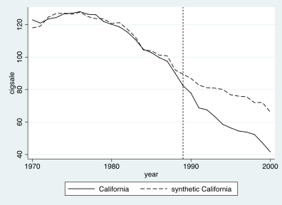
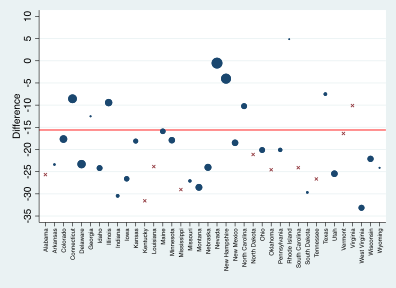
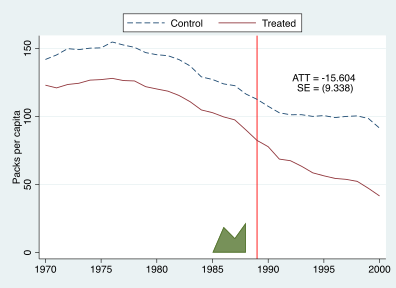

SCM와 SDID
Synthetic Control Method
복수의 통제집단 후보
- 지역 패널을 고려
- 1개 처치집단
(처치 지역) 과 1개 통제집단(미처치 지역) 의 시계열(즉, \(n=2\)인 패널데이터)이 있으면 DID로써 정책효과를 식별할 수 있음 - 하지만 1개 처치집단과 다수 통제집단의 시계열
(즉, \(n=1+J\)인 패널데이터) 이 있으면 어느 통제집단을 기준으로?- 하나만 선택?
- \(J\)개 통제집단의 단순평균을 사용?
- 아니면 그 중 일부의 가중평균?
Synthetic Control Method
- Abadie and Gardeazabal (2003, AER), Abadie, Diamond & Hainmueller (2010)
- 여러 통제집단 중 일부를 데이터에 기반하여 추출하여 가중평균(“synthetic control”)을 구성하는 방법
- \(i=1\)이 처치집단 \(i=2,\ldots,n\)이 통제집단이라 할 때, 목표는 \(w_2, \ldots, w_n\)을 ‘추정’하는 것이며, 이때 \(0 \le w_i \le 1\)이고 \(w_2 + \cdots + w_n = 1\)이라는 제약을 가함
- 사전 시기의 Y와 몇몇 특성들(X)을 가장 잘 맞추는 가중치를 추정
- 가중치 \(\hat{w}_2, \ldots, \hat{w}_{n}\)을 정하고 나면, synthetic control은 \(\sum_{j=2}^{n} \hat{w}_j y_{jt}\) (통제집단들의 가중평균), \(t\)별 정책효과는 \(y_{1t} - \sum_{j=2}^{n} \hat{w}_j y_{jt}\)
- 검정은 ‘placebo test’라는 것으로서, 통제집단 각각에 대하여 Synthetic control을 구성하여 정책효과를 구하여 그림을 그려 보는 것이다.
예) 스페인 바스크 지방 분리주의 무장단체(ETA) 활동의 경제적 손실
- Synthetic Basque = 0.851 Cataluna + 0.149 Madrid
예) 캘리포니아 담배억제정책의 효과
- Synthetic California = 0.164 Colorado + 0.069 Connecticut + 0.199 Montana + 0.234 Nevada + 0.334 Utah

코드 보기
use synth_smoking, clear
xtset state year
* ssc install synth
synth cigsale lnincome age15to24 retprice beer(1984(1)1988) cigsale(1988) cigsale(1980) cigsale(1975), trunit(3) trperiod(1989) xperiod(1980(1)1988) nested allopt fig
주. Apple M 계열의 경우 Stata 앱 실행 시 Info에서 Open using Rosetta를 체크한 후 실행해야 함. 안 그러면 Could not load plugin 에러가 발생함.
Synthetic DID
- Arkhangelsky, Athey, Hirshberg, Imbens, and Wager (AAHIW, 2021, AER)
- SCM은 레벨을 맞추는 것인데 이것을 DID로 일반화
- SCM은 비음 & 합계1 조건을 주는데, SDID는 ridge 활용
- 0이 아닌 가중치가 많아 숫자보다는 그림으로 report
예) 캘리포니아 담배억제정책의 효과
*ssc install sdid
use synth_smoking, clear
gen treated = state==3 & year>=1989
sdid cigsale state year treated, vce(placebo) seed(1)

